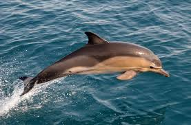
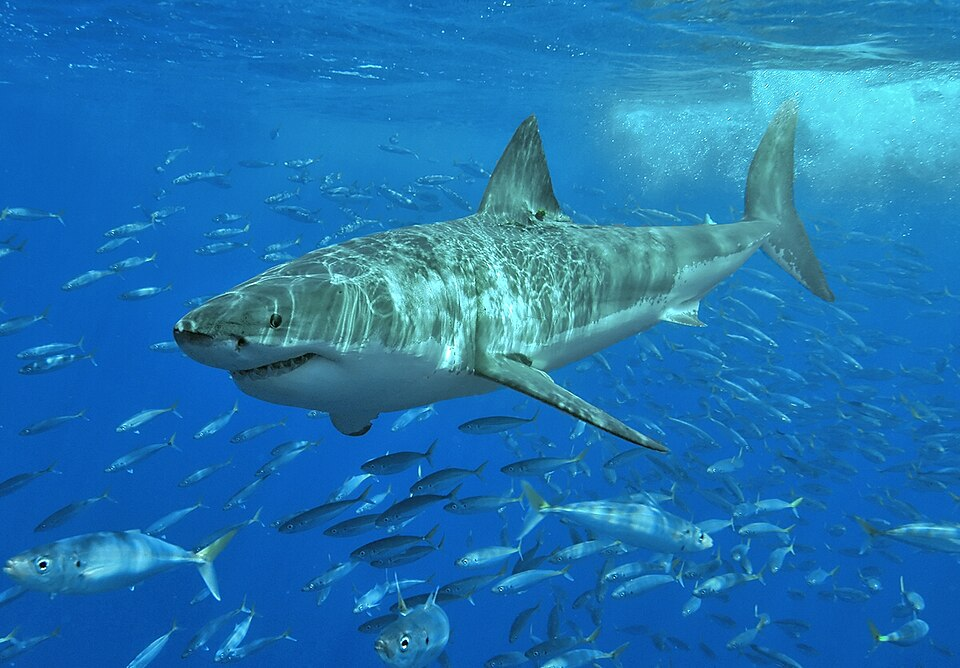
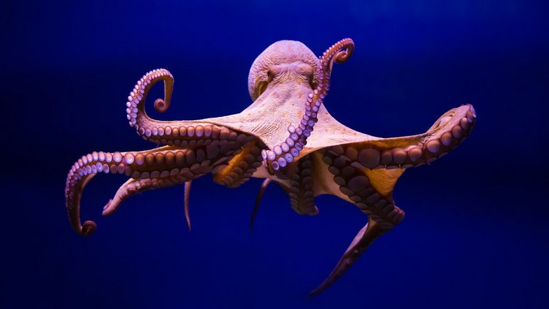
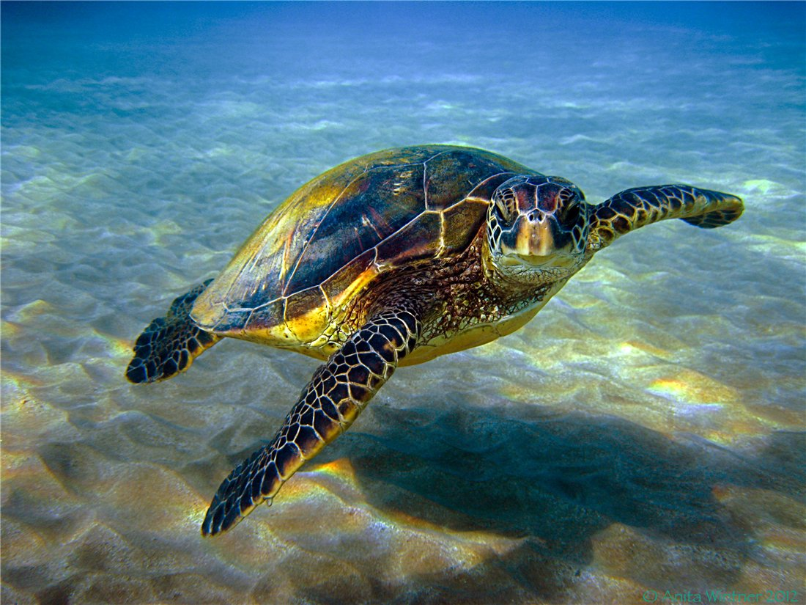
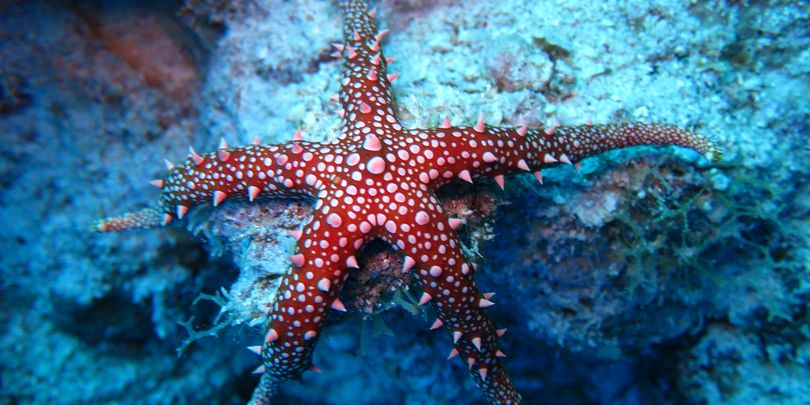

ლფინები (ლათ. Delphininae) — ძუძუმწოვრების ქვეოჯახი ვეშაპისნაირთა რიგისა. სხეულის სიგრძე 1,2-3 მ, ზოგი სახეობისა - 10 -მდე. წაგრძელებული დინგი ქმნის ე. წ. „ნისკარტს“, კბილების რაოდენობა 70-ს აჭარბებს. უმრავლესობას აქვს ზურგის ფარფლი. ექოლოკაციის უნარი და მეტად მახვილი სმენა (აღიქვამენ რამდენიმე ათეული ჰც-დან 150-196 კჰც-მდე რხევებს) დელფინებს წყალში ორიენტაციის საშუალებას აძლევს. აქვთ რთული ბგერითი სიგნალიზაცია და ბგერათსასიგნალო (საექოლოკაციო) ორგანო, რომელიც მოთავსებულია ერთადერთ ნესტოში. მასთან არის დაკავშირებული კუნთოვანი სისტემით აღჭურვილი სამი წყვილი საჰაერო პარკი. სიგნალების გამოსხივების სიხშირე 170 კჰც აღწევს. აქვთ მაღალგანვითარებული ცენტრალური ნერვული სისტემა: დიდი ზომის სფერული თავის ტვინი, ძლიერ დანაოჭებული ნახევარსფეროები, რომელთა ქერქი 30 მლტდ-მდე ნერვულ უჯრედს შეიცავს. დიდი ზომის თავის ტვინი საშუალებას აძლევს გადაამუშაონ დიდი რაოდენობის აკუსტიკური თუ სხვა სახის ინფორმაცია. თუთიყუშების მსგავსად, მათ შეუძლიათ ადამიანის მიერ თქმული სიტყვების გამეორება. გასაწვრთნელად და შესასწავლად ჰყავთ დელფინარიუმებსა და ოკეანარიუმებში. ისინი ადვილად იწვრთნებიან. ამჟამად იკვლევენ დელფინების ზოგი სახეობის მოშინაურების შესაძლებლობას. დელფინები ცხოვრობენ ჯოგებად, ცურავენ სწრაფად (50 კმ-მდე საათში). იკვებებიან თევზით, თავფეხიანი მოლუსკებით, იშვიათად კიბოსნაირებით. მაკეობა 10-12 თვე გრძელდება. შობენ ერთ ნაშიერს, რომლის სიგრძე დედის სიგრძის ნახევარს აღწევს. სქესობრივად მწიფდებიან 3-5 წლის ასაკში. დელფინების ქვეოჯახში 20 გვარია 48 სახეობით. შაბ ზღვაში ცხოვრობს სამი სახეობა: აფალინა, თეთრგვერდა დელფინები და ზღვის ღორი. ზოგი სახეობა (მაგ., ცელნამგალა ვეშაპი) კოსმოპოლიტია. დელფინების სახეობათა უმრავლესობა ცხოვრობს ოკეანეთა თბილ წყლებში. დელფინების სხეულის ფორმის ჰიდროდინამიკური სრულყოფა, გარეგანი საფარვლის აგებულება და ანტიტურბულლენტური თვისებები, დიდ სიღრმეში ყვინთვის უნარი, საიმედო ექოლოკაცია და ამ ცხოველის ორგანიზაციის სხვა თავისებურებანი მეტად საინტერესოა ბიონიკისათვის. ასევე საინტერესოა ფიზიოლოგიისა და მედიცინის თვალთახედვით დელფინების სუნთქვისა და სისხლის მიმოქცევის მთელი რიგი შეგუებანი (მიოგლობინის სიუხვე, გარეგანი სუნთქვის ხანგრძლივად შეჩერების უნარი, სისხლში დაგროვილი ნახშირორჯანგი სუნთქვის ცენტრზე არ მოქმედებს, პულსი შენელებულია და სხვა). დელფინების მოშინაურებით ადამიანს ზღვის სიმდიდრის უფრო სრულყოფილი ათვისების საშუალება ეძლევა. საზღვარგარეთ დელფინებს სწავლობენ სამხედრო მიზნითაც: ნაღმების, ტორპედოების, ჩაძირული გემების, წყალქვეშა ნავების აღმოსაჩენად და სხვა. დელფინების ზოგ სახეობას სარეწაო მნიშვნელობა აქვს. სსრკ-ში დელფინებზე რეწვა აკრძალული იყო 1966 წლიდან.
თეთრი ზვიგენი (ლათ. Carcharodon carcharias), აგრეთვე ცნობილი როგორც თეთრი პოინტერი, დიდი თეთრი ზვიგენი, ან თეთრი სიკვდილი, განსაკუთრებით დიდი ზომის ზვიგენია, რომელიც ოკეანის სანაპირო რეგიონებში ბინადრობს. მისი სიგრძე 6 მეტრს აღწევს, ხოლო წონა 2.000 კგ–ს და, შესაბამისად, აქამდე ცნობილი ყველაზე დიდი მტაცებელი თევზია. ის უძლეველია და მისთვის ერთადერთ საშიშროებას ადამიანი წარმოადგენს, თუ არ ჩავთვლით ორკას (დელფინთა გვარის). ამ უკანასკნელის დიეტა თეთრი ზვიგენის მსგავსია, თუმცა მათ შორის ურთიერთობა იშვიათია და ამგვარად ისინი პირდაპირი კონკურენტები არ არიან.
რვაფეხა (Octopus vulgaris) — თავფეხიანი მოლუსკი რბილტანიანთა ტიპისა. გავრცელებულია ოკეანათა და ზღვების ტროპიკულ, სუბტროპიკულსა და ზომიერ სარტყლებში. ჩრდილოეთით ვრცელდება შოტლანდიის სანაპიროემდე, ხოლო სამხრეთით — ავსტრალიამდე. თავზე აქვს 8 გრძელი „ხელი“ (წარსულში „ხელი“ ფეხად იყო მიჩნეული და აქედან წარმოდგა ცხოველის სახელწოდება) თავისი მისაწოვრებით. იკვებება ნაირგვარი ცხოველებით, თვითონ რვაფეხას ჭამენ ზღვის ძუძუმწოვრები, ზოგიერთი ფრინველი და თევზი. რვაფეხა განსხვავებულსქესიანია. განაყოფიერება შინაგანია. ზოგ ქვეყანაში მას საკვებად იყენებენ.
ზღვის კუები (ლათ. Chelonioidea), კუების რიგი. შეიცავს 1 ოჯახს საკუთრივ ზღვის კუსებრნს (Cheliniidae). მოზრდილი ცხოველებია, მთელ სიცოცხლეს წყალში ატარებენ. ხმელეთზე ამოდიან მხოლოდ კვერცხის დასადებად. დაბალი ჯავშანი აქვთ. თავის მთლიანად შეწევა ჯავშანში არ შეუძლიათ. კიდურები ფარფლებადაა ქცეული. წინა კიდურები გრძელია. მუცლის ფარი ზურგის ფარისაგან გამოყოფილია. გავრცელებული არიან ტროპიკულ და სუბტროპიკულ ზღვეებში, იშვიათად ზომიერ სარტყელში. არსებობს 4 გვარის თითო სახეობა. ზღვის კუები ასეულ კმ გადიან საკვებისა და გამრავლებისათვის ხელსაყრელი ადგილებისაკენ. დებენ რამდენიმე ათეულიდან 200-მდე და ზოგჯერ მეტ კვერცხს. მწვანე კუ (Chelonia mydas) — ყველაზე დიდია. მათი ჯავშნის სიგრძე 1,4 მ აღწევს, წონა 400 კგ-მდე. იკვებება წყალმცენარეებით. აქვს გემრიელი ხორცი და კვერცხი.
ზღვის ვარსკვლავები (ლათ. Asteroidea) — უხერხემლოთა კლასი კანეკლიანების ტიპისა. მათი ხუთ-, ზოგჯერ მრავალსხივიანი (50-მდე), კაშკაშა სხეულის სიგრძე 1 სმ-იდან 1 მ აღწევს. ფსკერის ცხოველებია, დაცოცავენ ამბულაკრული ფეხებით. უმრავლესობა მტაცებელია. ზოგს შეუძლია გადმოაბრუნოს კუჭი, შემოეხვიოს მსხვერპლს და სხეულის გარეთ მოინელოს. ზღვის ვარსკვლავების უმრავლესობა ცალსქესიანია. განვითარება მეტამორფოზით მიმდინარეობს, ზოგი ცოცხალმშობია. კარგად განვითარებული რეგენერაციის უნარი აქვთ. კლასში 1500-ზე მეტი სახეობაა, რომლებიც გავრცელებულნი არიან ყველა ზღვასა და ოკეანეში. ზღვის ვარსკვლავები იკვებება სარეწაო მოლუსკებით (ხამანწკები, მიტილუსები), აგრეთვე რიფის წარმომქმნელი ნაწლავღრუიანებით, რითაც დიდი ზიანი მოაქვს.
